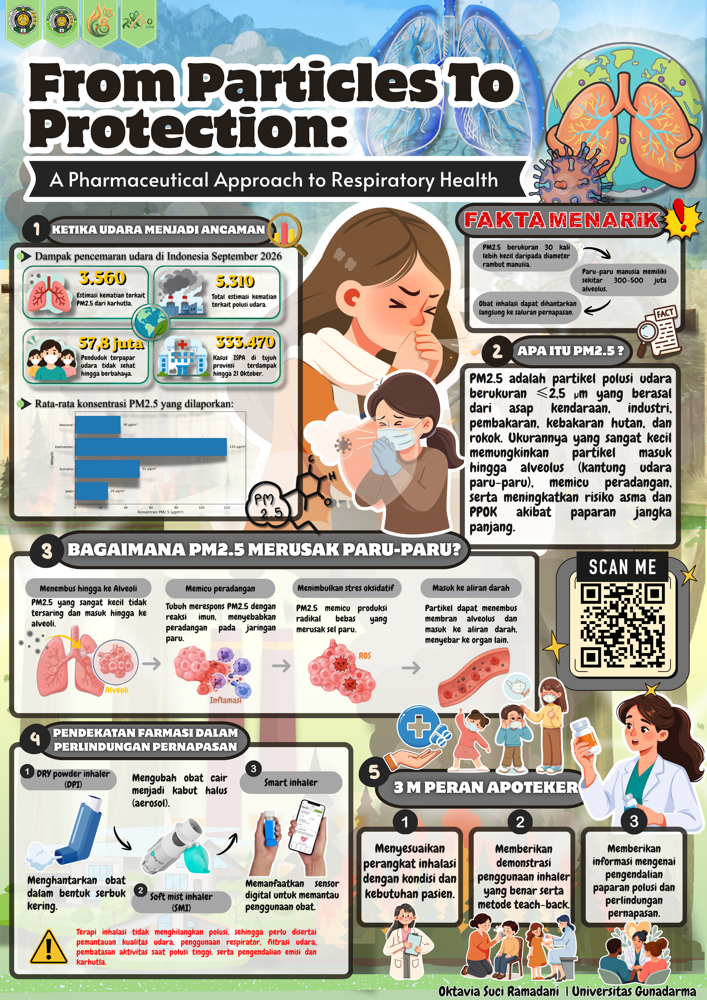

Learn
Kenali nama, kekuatan, kegunaan, dan cara kerja obat. Pengetahuan dasar mencegah salah pakai.
Poster “From Particles to Protection” menjelaskan alur sederhana: memahami obat, meraciknya dengan tepat, lalu menggunakannya untuk melindungi diri dan keluarga.
Kenali nama, kekuatan, kegunaan, dan cara kerja obat. Pengetahuan dasar mencegah salah pakai.
Ukuran partikel, pelarut, dan bentuk sediaan menentukan seberapa cepat obat larut dan diserap tubuh.
Pakai sesuai aturan, simpan dengan benar, dan tahu kapan harus bertanya pada apoteker atau dokter.

Seberapa bahaya polusi PM2.5 yang kita hirup setiap hari? Poster ini membahas PM2.5 sebagai partikel halus ≤2,5 µm dari transportasi, industri, karhutla, dan asap rokok yang mampu menembus hingga alveolus dan meningkatkan risiko asma dan PPOK, dengan dampak di Indonesia yang sangat nyata dimana laporan CREA September 2026 mencatat 5.310 kematian terkait polusi udara dan 333.470 kasus ISPA di tujuh provinsi dengan baku mutu Indonesia 55 µg/m³ yang jauh di atas pedoman WHO 15 µg/m³; di dalam paru PM2.5 memicu pembentukan ROS, stres oksidatif, dan aktivasi jalur inflamasi NF-κB yang merusak pertahanan mukosilier, sehingga pendekatan farmasi hadir melalui inovasi Dry Powder Inhaler (DPI), Soft Mist Inhaler (SMI), dan Smart Inhaler berbasis sensor digital, dimana apoteker berperan kunci dalam pemilihan perangkat, edukasi teknik inhalasi dengan metode teach-back, dan pemantauan kepatuhan terapi yang harus didukung proteksi seperti pemantauan AQI, respirator, filtrasi udara, dan pengendalian emisi.
Perluas wawasan dengan membaca jurnal ilmiah yang menjadi referensi dalam penyusunan poster. Setiap ringkasan menyajikan inti pembahasan penelitian agar informasi yang kompleks dapat dipahami secara lebih sederhana.
SafePharma.id adalah situs edukasi yang menjelaskan poster “From Particles to Protection” dalam bacaan yang mudah diikuti semua kalangan.
Setiap pengetahuan memiliki peran, setiap formulasi membawa manfaat, dan setiap langkah kecil berarti bagi kesehatan.